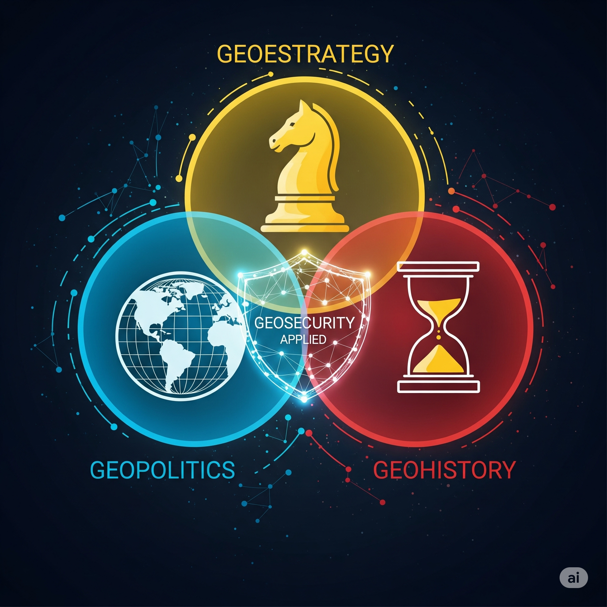

Manual de Geoseguridad
Capítulo 2: Comparativa con Disciplinas Afines
La Geoseguridad no existe en el vacío; se nutre y se diferencia de diversas disciplinas que también estudian la relación entre el espacio y los fenómenos humanos. Comprender estas distinciones y sus puntos de convergencia es fundamental para apreciar el valor único de la Geoseguridad.
2.1. Geopolítica
"El concepto de que la geopolítica sería como 'conquistar un estrecho' (enfocada en la adquisición de poder, la influencia y el control estratégico de espacios) y la geoseguridad sería como 'mantenerlo' (enfocada en la protección operativa, la resiliencia y la mitigación de riesgos de los activos y el espacio)."
A. Raúl Ramos Truán
La Geopolítica es el estudio de la influencia de los factores geográficos (ubicación, tamaño, recursos naturales, topografía, clima) en las relaciones de poder y la política internacional de los estados. Se enfoca en cómo la geografía es utilizada o percibida por los actores estatales para avanzar sus intereses nacionales y expandir su influencia global o regional.
- Enfoque principal: El poder estatal, las estrategias de los grandes actores y la configuración del orden mundial a partir de variables geográficas.
- Diferencia con Geoseguridad: Mientras la Geopolítica analiza cómo la geografía moldea la política de poder, la Geoseguridad se centra en la protección operativa y proactiva de activos concretos dentro de un territorio o en los flujos que lo atraviesan, frente a amenazas tangibles (ciberataques a infraestructuras críticas, desastres naturales, movimientos de actores no estatales) que pueden surgir o ser influenciadas por dinámicas geopolíticas. La Geopolítica es el "porqué" y el "gran cuadro"; la Geoseguridad es el "qué hacer" y el "cómo" a nivel táctico y estratégico para proteger el espacio.
2.2. Geoestrategia
La Geoestrategia se refiere a la aplicación práctica de los principios geopolíticos en la formulación y ejecución de estrategias militares, económicas y políticas para alcanzar objetivos nacionales o de alianzas. Es la manifestación operativa de la Geopolítica, donde el conocimiento geográfico se traduce en planes de acción y despliegue de recursos.
- Enfoque principal: La planificación y dirección de la política exterior y de defensa basada en consideraciones geográficas.
- Diferencia con Geoseguridad: La Geoestrategia se ocupa de la planificación a gran escala (dónde desplegar flotas, establecer bases militares, rutas comerciales), mientras que la Geoseguridad se enfoca en la seguridad y resiliencia de los activos específicos dentro de ese marco geoestratégico. Un geoestratega decide dónde construir un puerto; un profesional de Geoseguridad protege ese puerto de amenazas híbridas, climáticas o cibernéticas.
2.3. Geohistoria
"La geohistoria nos revela que el pasado no es solo historia, sino un 'manual de patrones' que predice dónde y cómo pueden surgir futuras vulnerabilidades geoseguras."
A. Raúl Ramos Truán
La Geohistoria es una corriente historiográfica que enfatiza la influencia de los factores geográficos y ecológicos en el desarrollo a largo plazo de las sociedades humanas. Busca patrones y estructuras temporales profundas en la interacción entre el hombre y su entorno físico.
- Enfoque principal: La comprensión de la evolución histórica de las sociedades a través de la lente geográfica, identificando inercias y continuidades.
- Diferencia con Geoseguridad: La Geohistoria proporciona el contexto y el análisis de patrones pasados (cómo una ruta comercial histórica puede ser hoy un corredor de contrabando, o cómo eventos climáticos pasados influyeron en la vulnerabilidad de una región). La Geoseguridad utiliza esta comprensión histórica para predecir vulnerabilidades futuras y diseñar medidas de protección actuales. La Geohistoria es una herramienta analítica fundamental para la Geoseguridad, proporcionando una base para el análisis predictivo.
2.4. Puntos de Convergencia e Interdependencia
A pesar de sus diferencias, estas disciplinas no son mutuamente excluyentes; de hecho, la Geoseguridad las integra y se beneficia de sus aportaciones:
- Uso de Sistemas de Información Geográfica (SIG): Todas estas disciplinas se apoyan fuertemente en los SIG para visualizar datos, analizar patrones espaciales y modelar escenarios. Los SIG son la herramienta transversal que permite la intersección de la geografía con la seguridad, la estrategia y la historia.
- Impacto del Cambio Climático: El cambio climático es un factor cada vez más relevante que difumina las fronteras entre estas disciplinas.
- Desde la Geopolítica: Alteración de fronteras, rutas de navegación (Ártico), conflictos por recursos hídricos.
- Desde la Geoestrategia: Planificación de despliegues militares para asistencia en desastres, reevaluación de infraestructuras críticas costeras.
- Desde la Geohistoria: Estudio de la resiliencia histórica de sociedades frente a cambios climáticos pasados.
- Desde la Geoseguridad: Protección de infraestructuras críticas ante inundaciones, sequías extremas, o la gestión de desplazamientos masivos de población inducidos por el clima, a la vez que se monitorizan los posibles conflictos derivados de la escasez de recursos.
La Geoseguridad es la disciplina que operacionaliza los conocimientos derivados de la Geopolítica, Geoestrategia y Geohistoria, transformando las grandes tendencias y los patrones históricos en acciones concretas de protección y resiliencia para un territorio y sus activos en el presente y futuro inmediato.